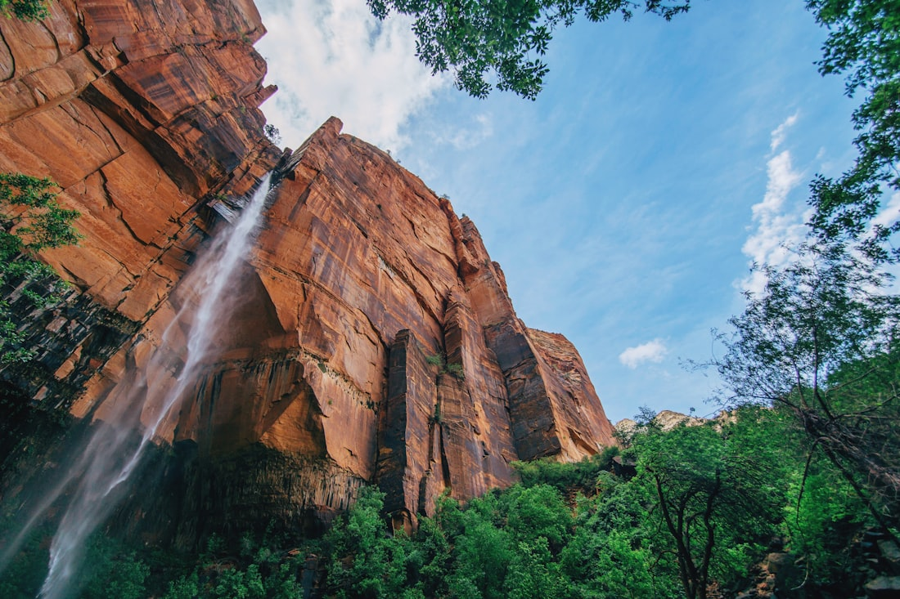
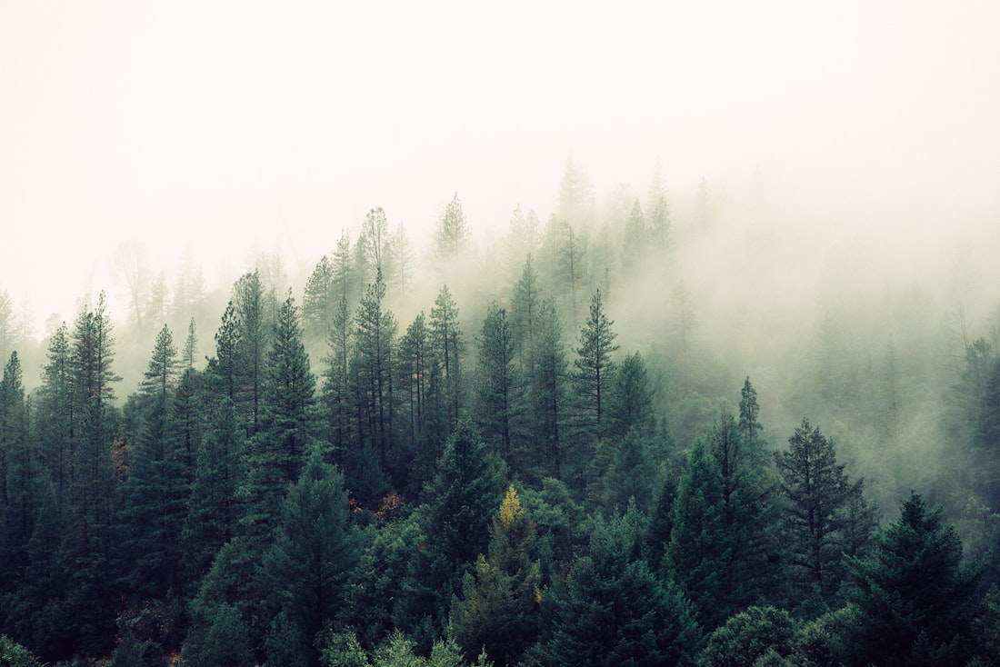
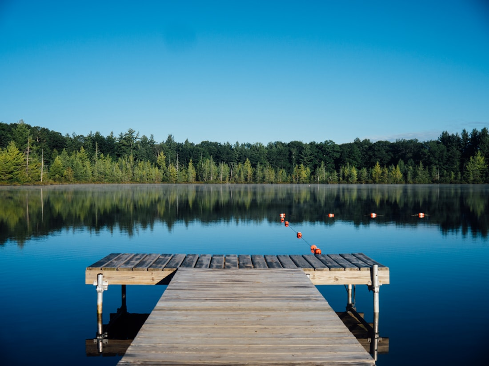
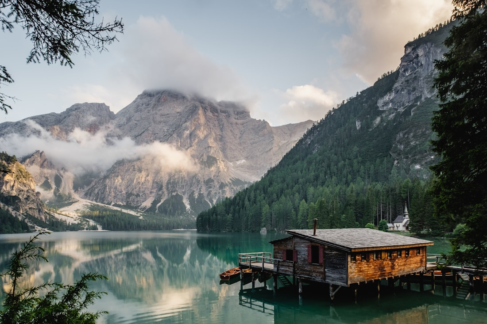
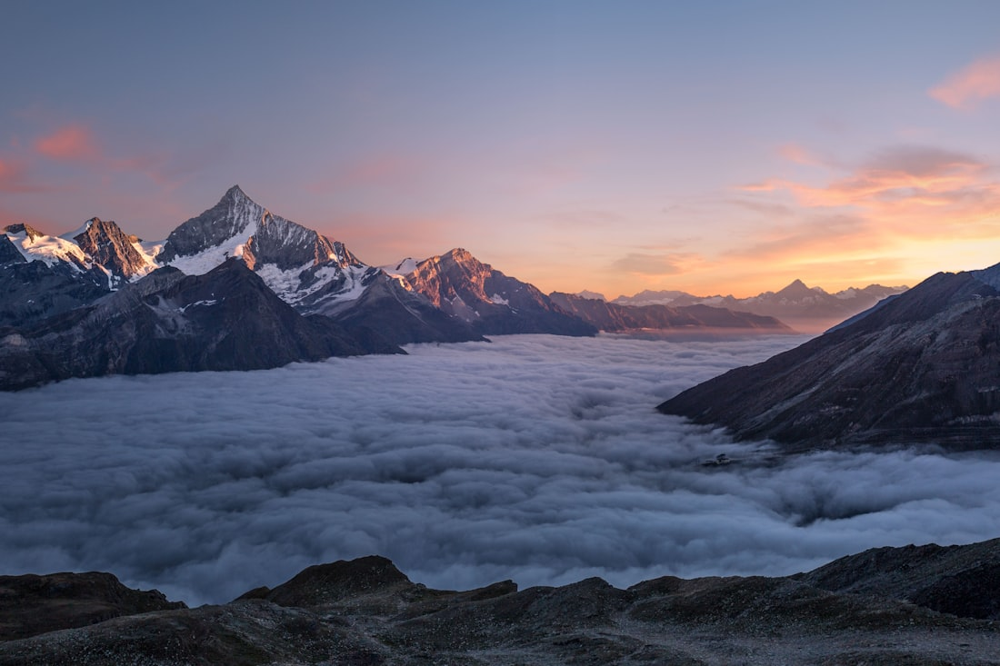
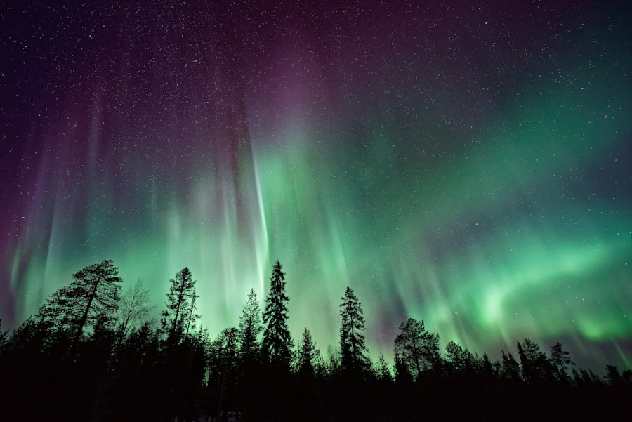
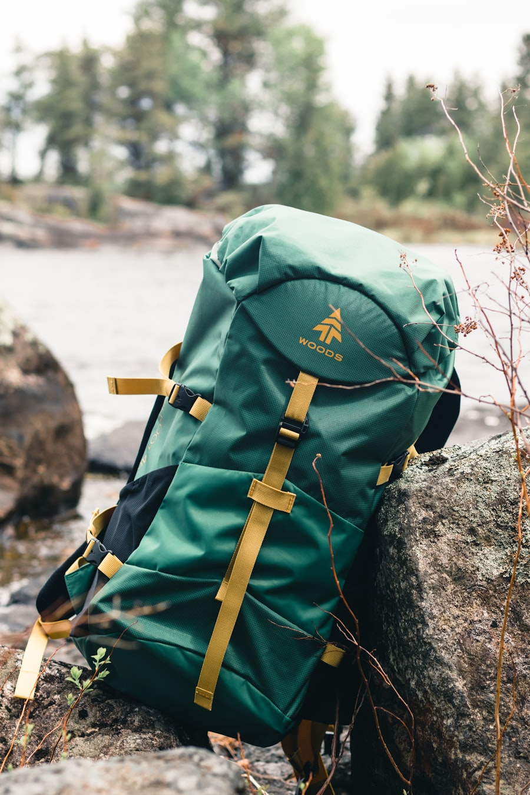
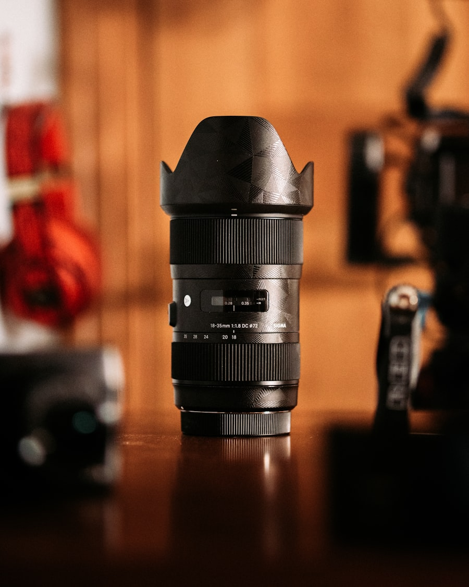
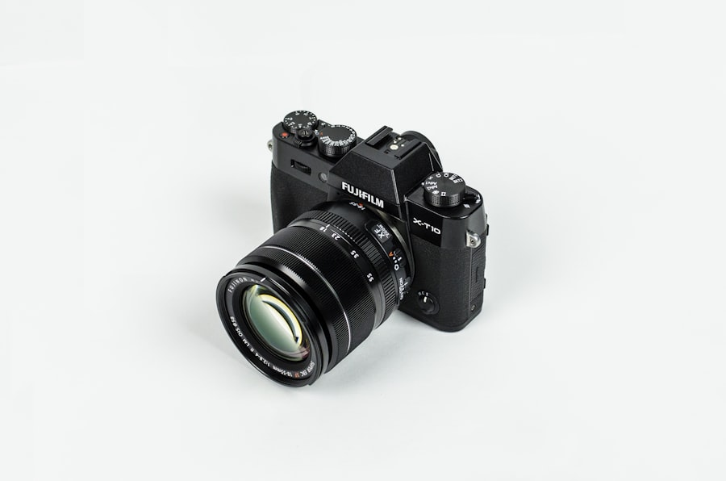
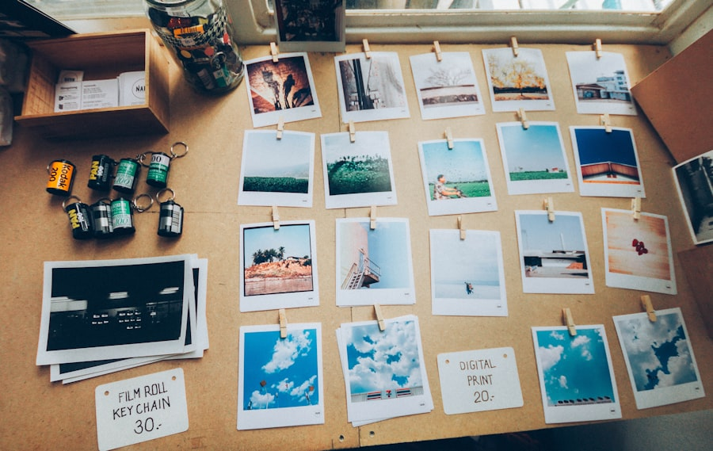

TIRAGES • FORMATIONS • PRESETS • PAYSAGE • ORIN VALE •
Boutique de Tirages
Tirages Disponibles dès maintenant
Tirages d'archives de qualité musée, finis à la main et expédiés dans le monde entier. Chaque édition est limitée et signée. Tarifs indicatifs affichés.
Aurora Over Kvaløya
Norvège
€0
The Burning Field
Patagonie
€0

Stillwater Fjord
Islande
€0
Canyon Light
Arizona, USA
€0
Dune Solitude
Désert du Namib
€0
Glacier Blue Hour
Patagonie
€0
Collections
Galeries Thématiques
Ensembles de travaux regroupés par ambiance, palette et lieu. Chaque galerie raconte une histoire approfondie issue d'une expédition unique.

International Orange
Golden Gate, USA

Colors of the Canyon
Antelope, Arizona

Lakeland
Cumbria, Angleterre

Nightfall
Atacama, Chili

Patagonia Sunset
El Chaltén, Argentine
Apprendre
Formations
Formations vidéo pas à pas pour vous accompagner du terrain à l'image finale, prête pour une galerie.
Masterclass : Tournages de Photographie de Paysage
18 leçons
La formation commence par les bases pour trouver des lieux de prise de vue exceptionnels et couvre tout ce que vous devez savoir pour capturer de superbes photographies de paysage — cadrage, composition, réglages de l'appareil, positionnement, visualisation des prises de vue et bien plus encore.

Guide Ultime de la Photographie du Ciel Nocturne
12 leçons
Tout ce qu'il faut savoir pour photographier l'astrophotographie — des meilleurs réglages à utiliser, trépieds et équipements, lieux de prise de vue, et comment créer de magnifiques images composites en post-production. Passez à la vitesse supérieure en photographie du ciel nocturne.
L'Art de la Retouche pour les Paysages
15 leçons
Un flux de travail de retouche complet et reproductible : création de masques de luminosité, étalonnage des couleurs pour l'ambiance, techniques de dodge & burn, et finalisation d'un fichier prêt pour l'impression, adapté à une présentation en galerie.

Lightroom
Presets
Styles prêts à l'emploi, élaborés après des années de travail sur le terrain. Appliquez-les à vos fichiers RAW et ajustez-les. Tarifs indicatifs affichés.

Presets Pack 2020
€0
Presets Pack 2019
€0

Presets Pack 2023
€0

Presets Pack 2022
€0
Presets Pack 2021
€0
Dans mon Sac
Matériel
L'équipement que j'emporte réellement sur le terrain. Conçu pour affronter les intempéries, les longues distances et les nuits froides sous les étoiles.
Vela 25mm
Objectifs

Aperture A7
Boîtiers

Tarion Backpack
Sacs
Lumen G7
Boîtiers

Vela 14–42mm
Logiciels

Steadex Tripod
Trépieds
Carnets de terrain
Journal
Lectures courtes et pratiques sur l’art de la photo — lumière, réglages et ces longues marches entre deux clichés.

Comprendre la vitesse d’obturation
Comprendre l’ouverture

Comprendre la sensibilité ISO
Lire la lumière à l’aube
À propos
À la poursuite de la lumière aux confins du monde
Orin Vale est un photographe paysagiste attiré par les lieux reculés et battus par les éléments — fjords, déserts, glaciers et ces longues heures bleutées qui les relient. Son travail, à la fois discret et contemplatif, repose sur la patience plutôt que sur le spectaculaire.
Au fil d’une décennie d’expéditions en Patagonie, en Norvège, en Islande et dans le Sud-Ouest américain, Orin a appris que les plus beaux clichés se révèlent à ceux qui savent attendre. Ce site est un lieu pour rassembler ses images, partager son savoir-faire et apporter une touche de nature sauvage sur vos murs.

0+
Années sur le terrain
0+
Pays
0+
Éditions vendues
Newsletter : Lumières & Perspectives
Carnets de terrain, nouvelles éditions et parfois un preset à télécharger. Zéro spam, juste de la lumière.